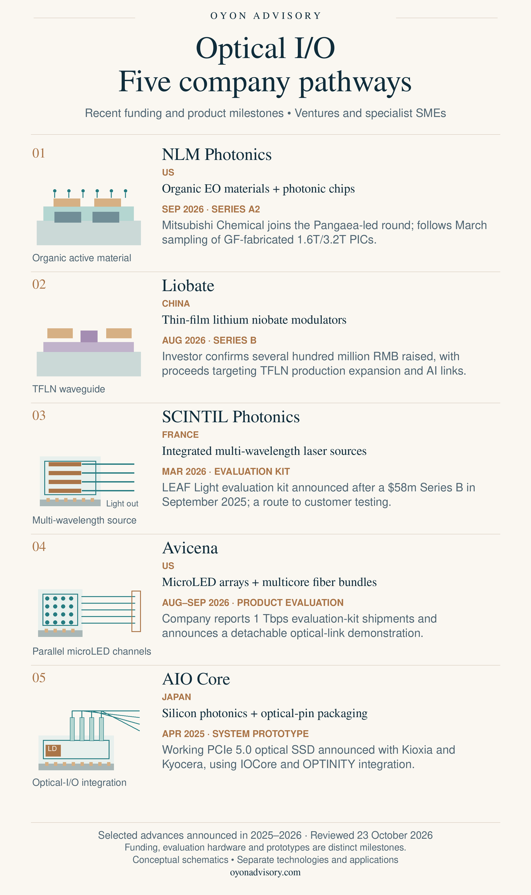

Back to Research & Perspectives
Optical I/O: Five Companies, Five Technology Pathways
AI infrastructure depends on moving data efficiently between processors, memory, storage and switches. Bringing optical connections closer to those devices creates opportunities in active materials, light sources, optical transceivers and precision integration.
Five ventures and specialist SMEs illustrate different approaches: NLM Photonics, Liobate, SCINTIL Photonics, Avicena and AIO Core. Their disclosed milestones span strategic investment, production-expansion funding, evaluation-kit releases and a working system prototype. The examples cover the US, China, France and Japan, with advances announced during 2025–2026.
Where the technologies fit
Optical input/output (I/O) sends and receives data using light. In a common laser-based link, an electrical driver and modulator encode data onto laser light; optical coupling connects the chip to fiber; and a detector and receiver electronics recover electrical data at the other end.
Co-packaged optics (CPO) is one packaging arrangement for optical I/O: the optical engine shares a package with a compute or switch chip. Other implementations place the optics on a board or in a removable module.
The five companies address different parts of this connection. NLM and Liobate develop modulation materials and devices. SCINTIL supplies multi-wavelength light sources. Avicena uses directly modulated microLED arrays. AIO Core combines optical transmitters, receivers and packaging for short-reach links.


Five companies and their recent milestones
1. NLM Photonics — organic electro-optic materials | US
NLM develops Selerion organic electro-optic materials for hybrid photonic devices. An applied electric field changes the material's refractive index, allowing a modulator to encode electrical data onto light. The Selerion-HTX material system is supported by University of Washington IP exclusively licensed to NLM. [1]
In September 2026, Mitsubishi Chemical announced investment through Diamond Edge Ventures in NLM's Pangaea-led Series A2 round. Earlier, in March 2026, NLM announced sampling of 1.6T and 3.2T photonic integrated circuits fabricated at GlobalFoundries. Together, these milestones connect materials development with an industrial investor and a defined fabrication route. [2] [3]
2. Liobate — thin-film lithium niobate devices | China
Liobate develops thin-film lithium niobate (TFLN) modulator chips and devices. Lithium niobate provides an electro-optic response; thin-film waveguides and electrodes turn that response into a compact modulation device. Its portfolio targets data-center and communications applications. [4]
In August 2026, existing investor Nanjing Innovation Capital confirmed completion of a Series B financing of several hundred million renminbi. The disclosure names participants including Hillhouse Venture, Yunfeng and Lenovo Capital, and says proceeds will support TFLN production-line expansion and next-generation AI optical-interconnect R&D. The investor also reports commercial applications, although the release does not name the relevant end customers. [5]
3. SCINTIL Photonics — multi-wavelength laser sources | France
SCINTIL's LEAF Light supplies multiple optical wavelengths from a single-chip laser-source platform. In wavelength-division multiplexing, separate wavelengths carry different data streams through a shared fiber. This places SCINTIL at the light-source stage of a laser-based optical connection. [6]
Following its $58 million Series B in September 2025, SCINTIL announced a customer-facing LEAF Light evaluation kit in March 2026. Tower Semiconductor also announced a joint laser-manufacturing platform in February 2026. These are concrete steps in manufacturing and customer evaluation; qualification in a customer's finished optical engine remains a further gate. [6] [7] [8]
4. Avicena — microLED optical links | US
Avicena's LightBundle uses dense microLED emitter arrays connected through multicore fiber bundles to detector arrays. Each microLED directly encodes data by changing its light output. Many parallel channels provide aggregate bandwidth, avoiding the separate laser-and-modulator combination used in other architectures. [9]
In August 2026, Avicena announced shipments of 1 Tbps evaluation kits, using up to 335 channels at up to 3 Gbps each. In September, it announced a detachable, reconnectable link demonstration for ECOC. These milestones expand the evidence from emitter performance toward practical evaluation, connection and serviceability. They do not establish volume deployment in a production AI system. [10]
5. AIO Core — integrated optical transceivers | Japan
AIO Core's IOCore combines silicon photonics, a quantum-dot laser, receiver functions and resin optical-pin coupling. It provides a compact optical-I/O building block for short-distance connections. Its published design supports NRZ signaling up to 32 Gbps and should be evaluated within those speed and reach requirements. [11]
In April 2025, Kioxia, AIO Core and Kyocera announced a functionally operating PCIe 5.0 optical-SSD prototype, combining IOCore with Kyocera's OPTINITY integration module. The result demonstrates a named system application and industrial integration partners. The partners described further proof-of-concept work toward implementation. [12]
What these milestones tell us
The opportunity extends across several businesses: organic chemistry, crystalline photonic devices, integrated lasers, emitter arrays and optical packaging. Each has different customers, manufacturing partners and qualification requirements.
The disclosed milestones also carry different meanings. Financing supports development and expansion. Foundry-fabricated samples and evaluation kits create a route for customer testing. A working prototype establishes functional integration in a specific application. None alone establishes repeat procurement or a common performance ranking across the five companies.
For investors and industrial partners, the next assessment should connect device performance with complete-link power, reliability, manufacturing yield, packaging cost and customer acceptance. The commercial value lies in a repeatable, qualified solution to a defined data-movement problem.
Oyon's scouting lens is technology → application → buyer → evidence.
Selected public sources
- NLM / University of Washington — Selerion-HTX patent and exclusive license, March 2025
- Mitsubishi Chemical — investment in NLM's Series A2, September 9, 2026
- NLM — sampling of GlobalFoundries-fabricated SOH PICs, March 16, 2026
- Liobate — TFLN devices and applications
- Nanjing Innovation Capital — Liobate Series B, August 12, 2026; Chinese
- SCINTIL — LEAF Light evaluation-kit announcement, March 11, 2026
- SCINTIL — $58 million Series B, September 9, 2025
- Tower Semiconductor / SCINTIL — laser-manufacturing platform, February 17, 2026
- Avicena — LightBundle technology
- Avicena — August 18 evaluation-kit shipment announcement and September 17 connectorized-link announcement, 2026
- AIO Core — IOCore transceiver, laser and optical-pin technology
- Kioxia / AIO Core / Kyocera — PCIe 5.0 optical-SSD prototype, April 8, 2025